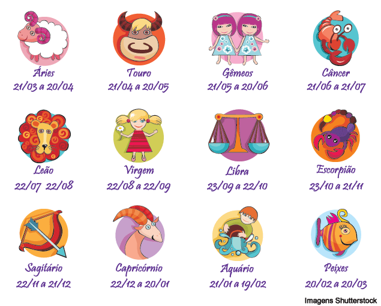

Acompanhe suas tendências diariamente e receba conselhos para cada momento.
O que se conhece como signo é na verdade o signo solar, que é a posição que o Sol ocupa em relação à Terra no momento do nascimento de cada pessoa. O signo solar sinaliza características da sua personalidade, mas você tem outros signos marcantes, como o ascendente ou a lua, por exemplo. Lendo a posição de todos os signos no seu Mapa Astral você pode mergulhar num caminho de autoconhecimento e entender quem de fato você é, como se relaciona e muito mais.
Os signos do zodíaco, como os conhecemos hoje, têm raízes antigas que remontam a civilizações antigas e culturas diversas em todo o mundo. Não existe uma única pessoa ou entidade que possa ser creditada com a criação dos signos do zodíaco, pois eles evoluíram ao longo de milhares de anos de observação astronômica e práticas culturais.
Os primeiros registros de astrologia datam de civilizações antigas, como os sumérios e os babilônios, que desenvolveram sistemas rudimentares de astrologia por volta de 2000 a.C. Essas civilizações observavam os movimentos dos planetas e estrelas no céu e acreditavam que eles tinham influência sobre eventos na Terra, incluindo a personalidade e o destino das pessoas.
Os gregos antigos contribuíram significativamente para o desenvolvimento da astrologia ocidental. O astrônomo grego Claudius Ptolemy, no século II d.C., escreveu "Tetrabiblos," uma obra influente que estabeleceu as bases da astrologia ocidental clássica. Ele dividiu a eclíptica em doze partes iguais, que mais tarde se tornaram os doze signos do zodíaco, cada um associado a constelações específicas.
A astrologia também era praticada em culturas orientais, como a chinesa e a védica indiana, que desenvolveram seus próprios sistemas de signos astrológicos.
Em resumo, os signos do zodíaco são o resultado de uma longa evolução cultural e astronômica ao longo da história da humanidade. Eles não foram criados por uma única pessoa, mas sim moldados ao longo do tempo por diversas civilizações que procuravam compreender melhor o cosmos e seu impacto nas vidas das pessoas. Hoje, a astrologia e os signos do zodíaco continuam a ser estudados e interpretados de várias maneiras, sendo uma parte intrigante da cultura e da espiritualidade em muitas sociedades.
Conheça as datas dos signos. O ano novo astrológico se inicia com Áries, geralmente no dia 20 de março. O sol permanece, mais ou menos, um mês em cada signo.
